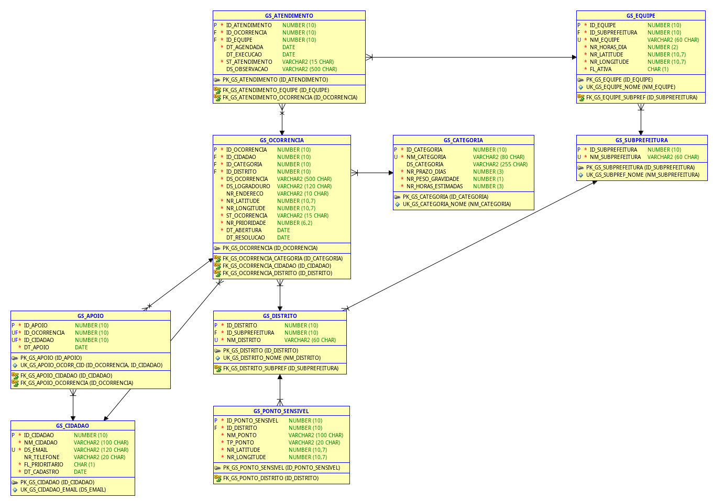

Sumário
Os títulos são links para as seções. A paginação final acompanha o conteúdo e as imagens inseridas.
1. Objetivo e escopo
Estruturar os dados do RuaViva para registrar problemas de zeladoria, indicar impacto coletivo e organizar atendimentos na Liberdade, com foco na Rua Barão de Iguape, Subprefeitura Sé.
O modelo Oracle tem nove tabelas, chaves geradas por IDENTITY e integridade declarada por PK, FK, UNIQUE e CHECK. É a base da API Java e fornece coordenadas e tempos para o planejamento de campo.
Os scripts usam sintaxe Oracle 19c ou superior; o README registra testes em Oracle XE 21. A implantação acadêmica usa Oracle FIAP.
2. Funcionalidades
- Manter territórios, categorias, cidadãos, equipes e pontos sensíveis.
- Registrar ocorrências com endereço, coordenadas e estado.
- Registrar um apoio por cidadão e ocorrência.
- Agendar e acompanhar visitas, preservando o histórico conforme as regras Java.
- Consultar problemas da rua, indicadores por categoria e fila sem atendimento válido.
Peso × 10 + 2 por apoio + 15 por ponto sensível a até 200 m + 10 por autor prioritário.
A API calcula e atualiza a prioridade; o DML já contém valores calculados com essa regra.
Origem dos dados
São 69 linhas demonstrativas: 15 ocorrências, das quais nove na Barão de Iguape. Endereços, coordenadas, tipos e datas vêm de solicitações SP156 do 3º trimestre de 2026. Cidadãos, apoios, equipes, descrições e atendimentos são simulados; quatro pontos sensíveis são fictícios. Prazos e pesos são referências da equipe.
O corte estatístico de sete dias do notebook é distinto de NR_PRAZO_DIAS, definido por categoria. As previsões não compõem a prioridade atual.
3. Tabelas e integridade
| Tabela / carga | Responsabilidade e atributos | Chaves |
|---|---|---|
GS_SUBPREFEITURA5 linhas | Unidade territorial responsável pelo atendimento; nome único. | PK: ID_SUBPREFEITURASem FK |
GS_DISTRITO5 linhas | Distrito vinculado a uma subprefeitura; nome único. | PK: ID_DISTRITOID_SUBPREFEITURA → GS_SUBPREFEITURA |
GS_CATEGORIA7 linhas | Tipo de serviço com descrição, prazo positivo, gravidade de 1 a 5 e horas estimadas positivas. | PK: ID_CATEGORIASem FK |
GS_CIDADAO8 linhas | Autor ou apoiador; nome, email único, telefone opcional, condição prioritária S/N e data de cadastro. | PK: ID_CIDADAOSem FK |
GS_PONTO_SENSIVEL5 linhas | Referência para o bônus de proximidade: nome, distrito, tipo e coordenadas. Tipos: ESCOLA, CRECHE, UBS, HOSPITAL, ILPI e TERMINAL; metrô está representado como TERMINAL. | PK: ID_PONTO_SENSIVELID_DISTRITO → GS_DISTRITO |
GS_EQUIPE5 linhas | Equipe de uma subprefeitura, com nome único, jornada de 1 a 24 horas, coordenadas da base e flag ativa S/N. | PK: ID_EQUIPEID_SUBPREFEITURA → GS_SUBPREFEITURA |
GS_OCORRENCIA15 linhas | Problema localizado, com autor, categoria, distrito, descrição, endereço, coordenadas, prioridade não negativa e datas. Estados: ABERTA, EM_ANDAMENTO, RESOLVIDA e CANCELADA. | PK: ID_OCORRENCIAID_CIDADAO → GS_CIDADAOID_CATEGORIA → GS_CATEGORIAID_DISTRITO → GS_DISTRITO |
GS_APOIO8 linhas | Associa cidadão e ocorrência; a chave única composta impede apoio duplicado para o mesmo par. | PK: ID_APOIOID_OCORRENCIA → GS_OCORRENCIAID_CIDADAO → GS_CIDADAO |
GS_ATENDIMENTO11 linhas | Visita de uma equipe a uma ocorrência; agendamento, execução, observação e status AGENDADO, CONCLUIDO ou CANCELADO. | PK: ID_ATENDIMENTOID_OCORRENCIA → GS_OCORRENCIAID_EQUIPE → GS_EQUIPE |
Integridade referencial
As dez FKs ligam cada registro filho a um pai obrigatório. A exclusão de ocorrência propaga-se a apoios e atendimentos por ON DELETE CASCADE. Outras exclusões dependem da ausência de filhos. A API acrescenta proteção ao histórico: ocorrência resolvida e atendimento concluído não podem ser excluídos.
Coordenadas têm limites de latitude/longitude. Datas de resolução não antecedem abertura; execução não antecede agendamento. VARCHAR2 usa tamanho em caracteres (CHAR), preservando textos com acentos. A combinação (ID_OCORRENCIA, ID_CIDADAO) é única em GS_APOIO.
4. Diagrama do modelo lógico (Oracle Data Modeler)

Gerado no Oracle SQL Developer Data Modeler 24.3 a partir de database/01_ddl.sql (Arquivo → Importar → Arquivo DDL, Oracle Database 21c): 19 instruções importadas, nenhuma com falha, resultando nas 9 tabelas e 10 chaves estrangeiras do script. O projeto do Data Modeler está em database/modelo/RuaViva.dmd.
5. Scripts e consultas
Os scripts DDL, DML e DQL são entregues em arquivos .sql separados deste PDF.
| Arquivo | Conteúdo |
|---|---|
| database/00_drop.sql | Recriação opcional: remove as nove tabelas. Conferir nomes existentes antes de executar; apaga os dados. |
| database/01_ddl.sql | Nove CREATE TABLE com PK, UNIQUE e CHECK; dez FKs via ALTER TABLE. |
| database/02_dml.sql | 69 registros, COMMIT e ajuste de IDENTITY com START WITH LIMIT VALUE. |
| database/03_dql.sql | Três consultas exigidas. |
Execução: 01_ddl.sql → 02_dml.sql → 03_dql.sql. Usar 00_drop.sql apenas para recriação consciente. Abrir arquivos em UTF-8 no SQL Developer.
| Consulta | Recursos SQL | Finalidade |
|---|---|---|
| 1 | INNER JOIN entre ocorrência e categoria | Problemas da Rua Barão de Iguape com categoria, estado e prioridade. |
| 2 | INNER JOIN + funções de grupo + GROUP BY | Total, resolvidas, média de dias até resolução e prioridade média por categoria. |
| 3 | LEFT OUTER JOIN + WHERE + ORDER BY | Ocorrências ABERTA sem atendimento não cancelado, por prioridade decrescente e data de abertura. |
No estado inicial, a consulta 3 coloca o bueiro da Barão de Iguape, 288, com 71 pontos, em primeiro lugar.
Fontes: database/README.md e os quatro scripts SQL do repositório.